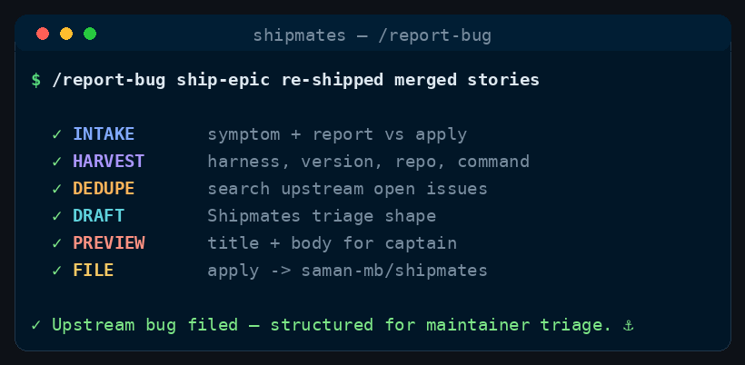

Command
/report-bug
structured upstream bug reports
File a structured bug report on the Shipmates repository from a live run — harness, command, repro, expected vs observed, in the format maintainers triage.
See it run

/report-bug runs, in order.How to run it
Run it in your harness
/report-bug [symptom text] [apply] — default report-only preview; apply files on saman-mb/shipmates after captain approval<angle brackets> = required · [square brackets] = optional
Who’s involved
Roles referenced across the stages below.
Step by step
The stages
Six stages, in order.
-
Stage 0 — Intake (orchestrator)
- Parse runtime input: optional symptom prose; the word
applysetsMODE=apply. Everything else is symptom context for the draft. - If the symptom is thin (no command named, no observed vs expected), ask one round of focused questions: which command misfired, what stopped the run, what the captain expected instead.
- Confirm the captain understands this files on
saman-mb/shipmates, not the current project repo.
- Parse runtime input: optional symptom prose; the word
-
Stage 1 — Context harvest (orchestrator)
Gather automatically where possible — quote verbatim in the draft when it clarifies the report:
shipmates --version(or note if the binary is absent).- Active harness — from install receipt, install path (
.claude/,.cursor/,.agents/, …), or session context. - Command that misfired (
/ship-epic,/ship-issue, …) and any guidance tokens the captain passed. - User repo —
gh repo view --json nameWithOwner,urlwhenghis authenticated in the project. - Numbered timeline from the session — what ran, what paused, what the captain said (preserve direction like "keep going" / "ya" verbatim when it triggered the report).
- Links to user-side issues or PRs when relevant.
- Optional: cite the installed skill text that explains today's behaviour (path under the harness tree).
-
Stage 2 — Dedupe (orchestrator)
Search open issues on
UPSTREAM_REPOfor the same command + symptom (gh search issues --repo saman-mb/shipmates --state openwith command name and key symptom words). When a strong match exists:- Surface the existing issue URL and a one-line overlap summary.
- Offer to comment on the existing issue (with the harvested context) instead of opening a duplicate.
- In
MODE=report, stop after the offer unless the captain already choseapplyand confirmed a new issue. - In
MODE=apply, file only when the captain explicitly wants a new issue despite the match; otherwise post the comment and report the URL.
-
Stage 3 — Draft
Crew:
product-managertechnical-writer(optionally)Spawn ONE
product-managerwith the harvested context and the template below. When the report cites command spec behaviour, optionally add ONEtechnical-writerpass to tighten the Spec reference section — still no upstream code changes.Title convention:
<command> <short symptom>— e.g./ship-epic stops the loop instead of running until the epic is shipped.Body shape (write to a temp file for preview and filing):
- Summary —
<command> <wrong behaviour>. <One sentence on impact.> - Observed — numbered timeline (command invoked, harness, user repo, what stopped).
- Expected — what the command spec says should happen.
- Environment — table: harness, shipmates version, user repo, command.
- Spec that causes today's behaviour — optional cite from the installed skill or canonical command.
- Acceptance criteria — checkboxes maintainers can verify when fixing upstream.
Return structured data: proposed title, body file path, labels, and any dedupe notes.
- Summary —
-
Stage 4 — Preview (orchestrator)
Print the title and full body. In
MODE=report, stop with how to file: re-run withapplyor explicit captain approval. InMODE=apply, continue only when the captain already invokedapplyor confirmed filing in this turn. -
Stage 5 — File (
applyonly — orchestrator)TITLE="<from draft>" gh issue create --repo saman-mb/shipmates \ --title "$TITLE" \ --body-file "$BODY_FILE" \ --label bugWhen commenting on a deduped issue instead, use
gh issue commentwith--body-file. Capture the returned issue URL for the final report.
Advanced Cost discipline, bundling, model selection, shell safety, and other preamble
Cost discipline
- Stable workflow instructions come before runtime input. Read and parse the complete runtime-input section at the end before acting; do not weave volatile issue text, arguments, diffs, or generated output through this prefix.
- Complexity-Based Tiered Execution: Before starting the workflow, evaluate the task complexity based on the input and repository context to select one of three execution paths:
- Simple: Minor/straightforward changes (e.g. documentation, typos, single config line, small edits affecting <= 2 files and <= 15 lines of code, no specialist flags). The main agent (you) executes, validates, and delivers the PR directly — but must still convene the mandatory PE+PO acceptance board on the pushed head (see shared board below). Cost savings come from skipping Planner/Builder spawns and optional specialists, not from skipping review.
- Medium: Moderate changes (<= 5 files, no major module boundaries, no architectural/security/delivery flags). Spawn a Planner and a single Builder and single SDET; skip Stage 1.5 design specs when no flags apply. Must convene PE+PO (and SDET on the board when validation is non-trivial) — not main-agent review.
- High: Complex or high-risk changes (e.g. major refactors, architectural boundaries, security/delivery changes). Follow the full multi-agent process loop described in the command, including Stage 1.5 when flagged and scaled optional board seats.
- Spend subagent seats only where their decision can change the outcome. Route model and effort at spawn by work difficulty; never hardcode a model in canonical content.
- Ask every subagent for a compact structured return: decision/status first, criterion findings and minimal evidence, then blockers, changed files with one-line rationale, and next action as relevant. Return decisions, not transcripts or raw logs.
File a structured bug report on saman-mb/shipmates from a live run in the captain's project — harness, command, repro, expected vs observed — in the shape maintainers already triage (#301, #305, #307). This command does not fix upstream; it reports upstream. Pair it with /fix-bug, which repairs bugs in the user's repo.
The symptom text and mode (report vs apply) come from the Runtime input section at the end.
Final report
One concise summary: issue URL (new or commented), dedupe decision, harness/version/repo/command captured, suggested follow-up (link from an epic pause comment, /ship-issue on upstream if the captain pivots to fixing Shipmates itself), and which mode ran.
Runtime input
$ARGUMENTS is optional symptom prose plus optional apply. Empty invocation still runs context harvest and drafts from the current session. Default is MODE=report — never file without captain consent.
Guardrails
- Never fixes upstream — no PR on
saman-mb/shipmatesunless the captain separately runs/ship-issuethere. - Never silently files — default is preview;
applyor explicit approval required. - Dedupe first — do not spam duplicate command/harness bugs.
- Captain voice preserved — quote direction verbatim when it triggered the report.
- Meta command — unlike domain-neutral crew roles, this command may name Shipmates, harnesses, and
saman-mb/shipmatesexplicitly; that exception is documented inAGENTS.md. - Orchestrator owns all
ghcalls — subagents return drafts only. - If a role does not resolve to its installed role file, fall back to
general-purposewith the brief inlined and note the fallback.
Config
UPSTREAM_REPO=saman-mb/shipmates(fixed — this command always files there).MODE=report(default) — draft the issue, show a preview, stop for captain approval.apply— create the issue on GitHub (or comment on a deduped match when the captain chooses that path). Infer from the runtime input tokens; when ambiguous, default toreportand state which mode you ran.LABELS=bug(always). Addharness:<name>orcommand:<slug>only when those labels already exist on the upstream repo — never create new label namespaces silently.TRAILER= required session/author trailer from context; append to any upstream comment you post.- Shell safety — capture GitHub-sourced titles and bodies into variables or temp files; write issues with
--body-file; never inline untrusted text into shell commands.
Where this lives
This page is generated from commands/report-bug.md. The installer copies it to ~/.claude/skills/report-bug/SKILL.md for every project, or .claude/skills/report-bug/SKILL.md inside a single repo.